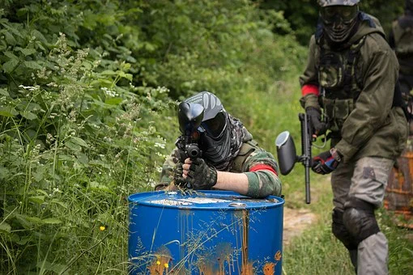
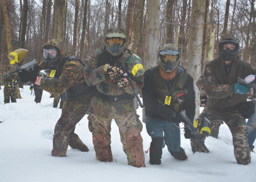
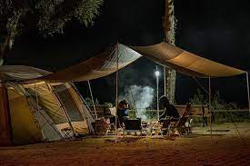

Home
Today I am going to introduce to you my favorite sport paintball. I have been playing for around 15 years now and have traveled all over the country to play in different events. I have not been able to play as much lately due to being busy with work and school but after I am done with pick it back up.
Paintball taught me the importance of teamwork growing up and may have factored into me joining the Marine Corps since I met a lot of veterans. Paintball is a great way to help them overcome things they have seen and give them a safe and healthy alternative. A lot of the veterans I met throughout my years playing told me stories and helped me prepare for leaving.
The Two Types
Scenario paintball is more of the objective game type. Generally they take after famous battles from wars or even movies and videgames and throw players into them. Players get really into these games and a lot even roleplay. These are the main types of games I play because they are usually for fun although there are point aspects to them.
Speedball is the competition side of paintball. This is where it get very competitive and tournaments are held all around the world with cash prizes. I know many players who enjoy both types and when it comes to what type of paintball guns I tend to lean more towards speedball. These games can take place literally anywhere and in fact California sets up a field on the beach every year for a tournament.
Seasons
Unlike other sports there is not a season for paintball. I have played in just about any climate you could think of from freezing temperatures in feet of snow, to blistering heat. The tournaments are held all around the world and the sport is slowing getting more and more coverage. One day everyone who plays hopes to see it become an Olympic sport. The sport can be played anywhere there is room for it which makes it extremely popular because there is nothing major required to play.
The fun part about paintball is the versatility in the sport. The fact that sure it may be cold or hot and the only thing you have to change is how you dress. I love playing in the snow because it seems like everything is quieter and you can build forts. My first memories of playing were from the times it snowed and I got my first paintball marker on Christmas.
Oklahoma D-Day
My favorite event that I have ever played is held in Oklahoma every year on the first week of June. The park where it was held recently held the last game last year as the owners were retiring. The event usually brought anywhere from between 2000 to 3000 people every year. It is a week long game meant to honor the soldiers who gave their lives during the invasion of Normandy during WWII.
The game was a test for everyone that played the weather usually was upwards of 100+ and you had to make sure you constantly drank water or ran the risk of having to be carried out by medics. I made a lot of friends over that week because we would camp out with our units and have our own games every night, including a large lightsaber battle.By the time the week is over we are all beat and ready to get home and get clean but for me that means a 13 hours drive back. I hope someone takes over hosting this event because it is by far the best game I have ever taken part in.
How to start playing
The easiest way to start playing would be to look for a local field around you. Most fields have every thing you need to start playing for rent. Beyond that all you really need is some clothes you don't mind getting dirty because you will get very dirty. Even if you go alone I can almost promise you will make some friends within the first few hours.
If you want to jump into a big game right away instead of just playing with a few people over the weekend you may have to travel. However, it reamins the same you'll be able to rent everything you need and make tons of friends. I suggest finding a multiple day game where you can camp out and get to know people. There is nothing better after a long day of paintball than some burgers cooked over a fire.
